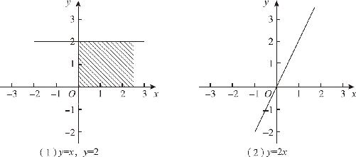
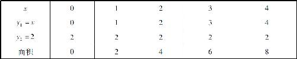
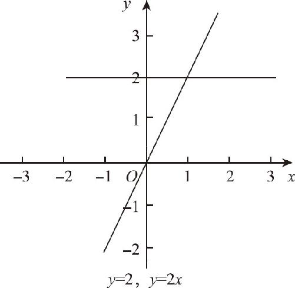
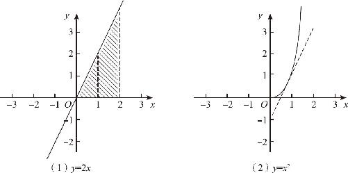
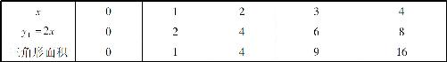
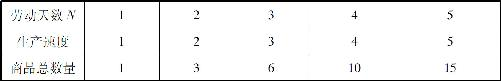
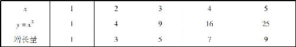
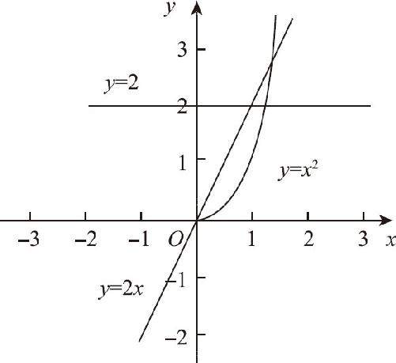

说完了函数的加减，再说说函数的乘法．一个函数乘以另一个函数的结果是什么呢？先简单看一下函数相乘的几何意义．在几何语言里，线段相乘的含义有两种：一种是两条线段垂直相交，组成了一个长方形，两者相乘的结果就是这个长方形的面积；另一种是把一条线段按照一定的比例放大．接下来，我们就会把这两种含义巧妙地结合起来，展现在同一个坐标系上．
从最简单的函数开始：y ＝2和y ＝x 相乘的结果是什么呢？y ＝2是一条和x 轴水平的直线，它到x 轴的距离有2个单位长；而y ＝x 表示的是一条45°的斜线．如果直接从图象上来看，两者似乎无法相乘，因为两条直线之间的夹角不是90°．在这里，直接把x 轴本身当作y ＝x 的图象来看待，在y ＝2和x 轴、y 轴之间就有了一个长方形的空间，我们只要把这个空间的面积求出来，就可以当作y ＝2和y ＝x 相乘的结果．这个空间的面积是什么呢？它的纵向高度是2，横向的宽度正好就是x 轴上对应的数值，比如x ＝1时，由x 轴、y 轴、x ＝1、y ＝2围成的这个长方形的面积就是2×1＝2，而当x ＝2时，这个长方形的面积就是4．［如图14－4（1）所示］依此类推得到如表14－2所示的数据表．

图14－4
表14－2

根据上述数据，我们不难发现长方形的面积随着x 的增大而增大，它和x 是正比例的关系，也就是说两个函数相乘的结果是y ＝2x ．截至目前，还是把面积当作两个函数的乘积，但是，当函数表达式y ＝2x 出来以后，把函数图象画在同一个坐标系上，y 的数值就是用纵坐标的长度来代表了．当我们同时把y ＝2和y ＝2x 的图象画在同一个坐标系上以后，y ＝2这个直线与x 轴之间的面积，正好就是y ＝2x ．（如图14－5所示）同样，y ＝2x 中，任何一点的纵坐标的大小，也都是y ＝2下方的矩形面积，不但如此，y ＝2x 这条直线的斜率恰恰就是k ＝2．这两个函数图象，一个用纵坐标表示了对方的面积，一个用直线表示了对方的斜率．

图14－5
上述分析似乎没有得出有价值的结论：两个函数，一个是y ＝2，一个是y ＝x ，两者相乘的结果等于2x ，结果只不过是人所共知的事实而已．但是，如果按照上述方法继续分析下去，就会发现一个完全不同的新世界．如果凭借直觉判断，在y ＝2x 的基础上再乘上y ＝x ，结果似乎应该等于2x 2 ，而正确结果是x 2 ，这又是为什么呢？接下来我们就来深入分析：
y ＝2x 的函数图象是一条经过原点的斜线，如果要计算它和y ＝x 两个函数的乘积，需要计算这条斜线与x 轴之间包含的图形的面积．在x ＝1的位置上，我们可以画出一条垂直于x 轴的直线，显然，当x ＝1时，y ＝2x 的函数值＝2，这就意味着两条直线的交点是（1，2）．同时，因为y ＝2x 也经过原点，相互交叉就形成了一个直角三角形，三角形的底边是x 的坐标值等于1，另一条边是y ＝2x 的纵坐标高度等于2，知道了两条直角边，很容易得出三角形的面积S ＝2×1÷2＝1．同理，当x ＝2时，x 轴与y ＝2x 的交点是4．［如图14－6（1）所示］按此规律，得到三角形的面积随x 的变化规律如表14－3所示．

图14－6
表14－3

描点绘图以后，得到的结果显然就是y ＝x 2 的图象，而不是y ＝2x 2 ，为什么会这样呢？从图形上来看，这是三角形的面积，三角形的面积等于长乘宽除以2，它不像y ＝2一样，y ＝2的这条直线是和x 轴平行的，它截取的面积是长方形，只需要长乘以宽就可以了．从代数表达式上，我们还是不理解，为什么2x 乘以x 以后被无缘无故地缩小了一半．
其实，现在要求的是两个函数的乘积，而随着x 的增长，这两个函数都在不断地变化之中．比如：当x ＝3时，y ＝2x 的结果等于6，两者相乘的确等于3×6＝18．然而问题在于，x 并不是一直等于3的，2x 也不是一直等于6的，它们都是从0开始，逐渐变大的．换句话说，现在要求的是两个变化的数的乘积，因此不能用它们最终的结果来表示．
对此，可以举出一个形象的比喻：当工人在劳动时，随着经验不断积累，生产产品的速度也会越来越快：虽然第1天只能生产1件产品，但是当工作到第5天后，他每天都能生产5件产品了．（数据整理见表14－4）在这种情况下，如果要求他在第N 天时一共生产了多少件商品，就不能用最后一天的速度乘以所有的天数，而只能是把每天生产的产品数量累加起来，而这个累加的结果，就相当于两个动态函数的乘积．
表14－4

同理，y ＝2x 和y ＝x 2 之间存在的就是这种关系，后者表示的是前者和x 轴之间的面积．现在，让我们把y ＝x 2 的数字序列依次写下来，分析这些数据会发现另一个有趣的事实：如果我们用y 的下一个数值减去上一个数值，就可以得到函数的y ＝x 2 增长量，把每一点的增长量写下来就得到了一个奇数序列1、3、5、7、9（见表14－5），每次的差值都是2；如果我们把这些点重新绘制成一条线，就会发现，这是一条和y ＝2x 平行的线，是的，这就是y ＝x 2 的增长量的变化规律．于是，y ＝2x 表示的就是y ＝x 2 这条抛物线的增长量的规律．
表14－5

现在，在同一个坐标系上得到了三个函数图象：y ＝2这条直线表示的是y ＝2x 的增长率，而y ＝2x 表示的是y ＝2与x 轴之间的长方形的面积；同理，y ＝2x 这条斜线表示的是y ＝x 2 的增长率，而y ＝x 2 表示的则是y ＝2x 与x 轴之间的三角形的面积．（如图14－7所示）它们三者之间相互依存地高度融合在一起，同样告诉我们这样一个基本事实：这个世界在变化的背后总是隐藏着不变的规律．像抛物线这样复杂变换的曲线，背后是一条有规律的斜线在支撑，而斜线的数值仍然是变化的，它的背后又是一条永远不变的水平线．就这样，我们依靠函数图象的变换，完成了对这个世界普遍法则的深刻理解．

图14－7
那么，y ＝x 2 与x 轴之间的面积如何计算呢？y ＝2的背后还有没有更本质的规律呢？当然有，这是高等数学微积分的基本内容．只要把一根曲线进行无限切分，切分成最微小的点，尔后发现每一个点的变化规律，这个过程就叫作微分；与之相反，把一个不规则图形切分成无限小以后求得各部分的面积，再把它们累积起来，这个过程就叫作积分．微积分既可以让我们不断剖析规律背后的规律，直至抓住事物的本质，又可以让我们从简单至极的普遍规律出发，一步步推导演化出复杂问题的解决办法．